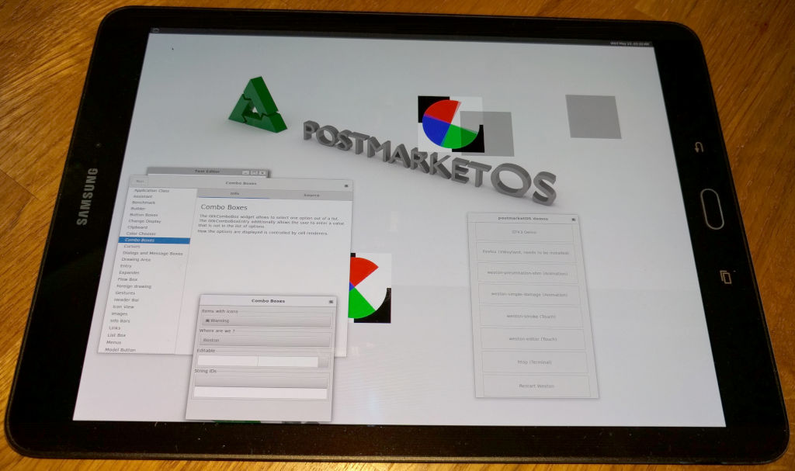

Samsung Galaxy Tab S2 9.7 Wifi (samsung-gts210vewifi)
|
 Samsung Galaxy Tab S2 9.7 Wifi | |
| Manufacturer | Samsung |
|---|---|
| Name | Galaxy Tab S2 9.7 Wifi |
| Codename | samsung-gts210vewifi |
| Released | 2016 |
| Category | testing |
| Original software | Android 7.0 |
| Hardware | |
| Chipset | Qualcomm MSM8976 Snapdragon 652 |
| CPU | Octa-core Cortex-A53 & Cortex-A72, 4 x 1.8 GHz & 4 x 1.4 GHz |
| GPU | Adreno 510 |
| Display | 1536x2048 (264 PPI) HD Super AMOLED |
| Storage | 32 GB |
| Memory | 3 GB |
| Architecture | aarch64 |
{kind=link}
| USB Networking |
Works
|
|---|---|
| Flashing |
Works
|
| Touchscreen |
Works
|
| Display |
Works
|
| WiFi | |
| FDE | |
| Mainline | |
| Battery | |
| 3D Acceleration | |
| Audio | |
| Bluetooth | |
| Camera | |
| GPS | |
| Mobile data | |
| SMS | |
| Calls | |
| USB OTG | |
| NFC | |
| Accelerometer | |
|---|---|
| Magnetometer | |
| Ambient Light | |
| Proximity | |
| Hall Effect | |
| Ir TX | |
|---|---|
| TrustZone | |
Contents
Contributors
- K-laus
Maintainer(s)
What works
- compiling kernel
- booting
- ssh connection
- screen output
- touch screen (if warm-booted from TWRP)
What does not work
- everything else not tested
How to enter flash mode
- Recovery: With the device powered off, hold Home + Volume Up + Power.
- Download: With the device powered off, hold Home + Volume Down + Power.
Sometimes, to enter Recovery it is needed to first enter Download mode, then again hold Home + Volume Down + Power and while screen goes blank, switch to hold Home + Volume Up + Power.
Unlocking
In Android go to settings -> System -> About phone and tap the build number 7 times. Then go to settings -> system -> developer options and enable OEM unlocking
Partition Infos
from an adb shell of LineageOS 15.1 installation, after installing some additional apps:
gts210vewifi:/ $ df
Filesystem 1K-blocks Used Available Use% Mounted on
tmpfs 1422568 684 1421884 1% /dev
/dev/block/mmcblk0p36 4165952 1439600 2726352 35% /system
tmpfs 1422568 0 1422568 0% /mnt
/dev/block/mmcblk0p39 25119032 5895552 19223480 24% /data
/dev/block/mmcblk0p37 197472 1240 196232 1% /cache
/dev/block/mmcblk0p34 86992 18096 68896 21% /firmware
/dev/block/mmcblk0p33 85968 29248 56720 35% /firmware-modem
/dev/block/mmcblk0p32 12016 3736 8280 32% /dsp
/dev/block/mmcblk0p25 28144 144 28000 1% /persist
/data/media 25119032 5895552 19223480 24% /storage/emulated
gts210vewifi:/ $ cat /proc/partitions
major minor #blocks name
179 0 30535680 mmcblk0
179 1 512 mmcblk0p1
179 2 512 mmcblk0p2
179 3 32 mmcblk0p3
179 4 32 mmcblk0p4
179 5 2048 mmcblk0p5
179 6 512 mmcblk0p6
179 7 2048 mmcblk0p7
179 8 512 mmcblk0p8
179 9 3072 mmcblk0p9
179 10 16 mmcblk0p10
179 11 256 mmcblk0p11
179 12 256 mmcblk0p12
179 13 10672 mmcblk0p13
179 14 3072 mmcblk0p14
179 15 3072 mmcblk0p15
179 16 10240 mmcblk0p16
179 17 14336 mmcblk0p17
179 18 32768 mmcblk0p18
179 19 32768 mmcblk0p19
179 20 7168 mmcblk0p20
179 21 5121 mmcblk0p21
179 22 6135 mmcblk0p22
179 23 3072 mmcblk0p23
179 24 8 mmcblk0p24
179 25 32768 mmcblk0p25
179 26 1024 mmcblk0p26
179 27 1024 mmcblk0p27
179 28 512 mmcblk0p28
179 29 32 mmcblk0p29
179 30 1024 mmcblk0p30
179 31 256 mmcblk0p31
259 0 16384 mmcblk0p32
259 1 106720 mmcblk0p33
259 2 24576 mmcblk0p34
259 3 9216 mmcblk0p35
259 4 4300800 mmcblk0p36
259 5 204800 mmcblk0p37
259 6 40960 mmcblk0p38
259 7 25653228 mmcblk0p39
179 32 4096 mmcblk0rpmb
gts210vewifi:/ $ ls -la /dev/block/bootdevice
lrwxrwxrwx 1 root root 39 2016-01-17 22:21 /dev/block/bootdevice -> /dev/block/platform/soc.0/7824900.sdhci
gts210vewifi:/ $ ls -la /dev/block/platform/soc.0/7824900.sdhci/by-name/
total 0
drwxr-xr-x 2 root root 820 2016-01-11 20:43 .
drwxr-xr-x 4 root root 900 2016-01-11 20:43 ..
lrwxrwxrwx 1 root root 20 2016-01-11 20:43 aboot -> /dev/block/mmcblk0p5
lrwxrwxrwx 1 root root 21 2016-01-11 20:43 apnhlos -> /dev/block/mmcblk0p34
lrwxrwxrwx 1 root root 21 2016-01-11 20:43 backup -> /dev/block/mmcblk0p22
lrwxrwxrwx 1 root root 21 2016-01-11 20:43 boot -> /dev/block/mmcblk0p18
lrwxrwxrwx 1 root root 21 2016-01-11 20:43 bota -> /dev/block/mmcblk0p20
lrwxrwxrwx 1 root root 21 2016-01-11 20:43 cache -> /dev/block/mmcblk0p37
lrwxrwxrwx 1 root root 21 2016-01-11 20:43 cmnlib -> /dev/block/mmcblk0p12
lrwxrwxrwx 1 root root 21 2016-01-11 20:43 config -> /dev/block/mmcblk0p29
lrwxrwxrwx 1 root root 20 2016-01-11 20:43 ddr -> /dev/block/mmcblk0p3
lrwxrwxrwx 1 root root 21 2016-01-11 20:43 devcfg -> /dev/block/mmcblk0p31
lrwxrwxrwx 1 root root 21 2016-01-11 20:43 dsp -> /dev/block/mmcblk0p32
lrwxrwxrwx 1 root root 21 2016-01-11 20:43 efs -> /dev/block/mmcblk0p17
lrwxrwxrwx 1 root root 21 2016-01-11 20:43 fota -> /dev/block/mmcblk0p21
lrwxrwxrwx 1 root root 21 2016-01-11 20:43 fsc -> /dev/block/mmcblk0p23
lrwxrwxrwx 1 root root 20 2016-01-11 20:43 fsg -> /dev/block/mmcblk0p9
lrwxrwxrwx 1 root root 21 2016-01-11 20:43 hidden -> /dev/block/mmcblk0p38
lrwxrwxrwx 1 root root 20 2016-01-11 20:43 hyp -> /dev/block/mmcblk0p8
lrwxrwxrwx 1 root root 21 2016-01-11 20:43 keymaster -> /dev/block/mmcblk0p11
lrwxrwxrwx 1 root root 21 2016-01-11 20:43 keystore -> /dev/block/mmcblk0p28
lrwxrwxrwx 1 root root 20 2016-01-11 20:43 limits -> /dev/block/mmcblk0p4
lrwxrwxrwx 1 root root 21 2016-01-11 20:43 modem -> /dev/block/mmcblk0p33
lrwxrwxrwx 1 root root 21 2016-01-11 20:43 modemst1 -> /dev/block/mmcblk0p14
lrwxrwxrwx 1 root root 21 2016-01-11 20:43 modemst2 -> /dev/block/mmcblk0p15
lrwxrwxrwx 1 root root 21 2016-01-11 20:43 mota -> /dev/block/mmcblk0p30
lrwxrwxrwx 1 root root 21 2016-01-11 20:43 pad -> /dev/block/mmcblk0p13
lrwxrwxrwx 1 root root 21 2016-01-11 20:43 param -> /dev/block/mmcblk0p16
lrwxrwxrwx 1 root root 21 2016-01-11 20:43 persdata -> /dev/block/mmcblk0p35
lrwxrwxrwx 1 root root 21 2016-01-11 20:43 persist -> /dev/block/mmcblk0p25
lrwxrwxrwx 1 root root 21 2016-01-11 20:43 persistent -> /dev/block/mmcblk0p26
lrwxrwxrwx 1 root root 21 2016-01-11 20:43 recovery -> /dev/block/mmcblk0p19
lrwxrwxrwx 1 root root 20 2016-01-11 20:43 rpm -> /dev/block/mmcblk0p6
lrwxrwxrwx 1 root root 20 2016-01-11 20:43 sbl1 -> /dev/block/mmcblk0p1
lrwxrwxrwx 1 root root 20 2016-01-11 20:43 sbl1bak -> /dev/block/mmcblk0p2
lrwxrwxrwx 1 root root 21 2016-01-11 20:43 sec -> /dev/block/mmcblk0p10
lrwxrwxrwx 1 root root 21 2016-01-11 20:43 ssd -> /dev/block/mmcblk0p24
lrwxrwxrwx 1 root root 21 2016-01-11 20:43 steady -> /dev/block/mmcblk0p27
lrwxrwxrwx 1 root root 21 2016-01-11 20:43 system -> /dev/block/mmcblk0p36
lrwxrwxrwx 1 root root 20 2016-01-11 20:43 tz -> /dev/block/mmcblk0p7
lrwxrwxrwx 1 root root 21 2016-01-11 20:43 userdata -> /dev/block/mmcblk0p39
Installation
installed system on sdcard:
- put (empty/overwritable) SD-card into host cardreader
- pmbootstrap install --sdcard=/dev/...
- put SD-Card, now containing pmOS into tablet
- pmbootstrap flasher flash_kernel # after this command finishes, device reboots and pmOS starts :-)
- had to follow USB_Network#Assigning_an_IP_address as IP to host computer was not automatically assigned:
- sudo ip link set TheNetDevName address 12:12:12:12:12:12
- sudo ip address add dev TheNetDevName 172.16.42.2/24
- sudo dhclient -v TheNetDevName
- ssh -p 22 user@172.16.42.1
Developer Notes
Without proper kernel setting that allows RNDIS via USB connection (CONFIG_USB_ETH with CONFIG_USB_ETH_RNDIS, or CONFIG_USB_G_ANDROID), device did seem to hang at the initial boot screen while displaying " KERNEL IS NOT SEANDROID ENFORCING Set Warranty Bit : kernel
SAMSUNG Galaxy Tab S2
POWEREd BY android " but this was only due to not having an RNDIS connection via USB!
Not mentioned in the porting docu yet: Had to use uppercase partition labels in deviceinfo_flash_heimdall_partition_(kernel|system) variables in deviceinfo file, even if their symlinks are lowercase (e.g. "system -> /dev/block/mmcblk0p36"), otherwise get 'ERROR: Partition "system" does not exist in the specified PIT.'
libinput 1.10.5 measure touchpad-pressure
Touchpad pressure does not seem return pressure but is related to the number of fingers touched at the same time, see below ("# x finger down" comments added by me). Unfortunately, tweaking the pressure like https://wayland.freedesktop.org/libinput/doc/latest/touchpad_pressure.html tells does not work.
gts210vewifi:~# libinput measure touchpad-pressure
Using sec_touchscreen: /dev/input/event2
Ready for recording data.
Pressure range used: 30:25
Palm pressure range used: 130
Place a single finger on the touchpad to measure pressure values.
Ctrl+C to exit
# 1 finger down
Sequence 496 pressure: min: 0 max: 255 avg: 127 median: 255 tags: down palm
# 2 finger down
Sequence 508 pressure: min: 0 max: 255 avg: 127 median: 255 tags: down palm
Sequence 508 pressure: min: 0 max: 255 avg: 85 median: 0 tags: down palm
# 3 finger down
Sequence 511 pressure: min: 0 max: 255 avg: 127 median: 255 tags: down palm
Sequence 511 pressure: min: 0 max: 255 avg: 85 median: 0 tags: down palm
Sequence 511 pressure: min: 0 max: 255 avg: 63 median: 0 tags: down palm
# 4 fingers down
Sequence 522 pressure: min: 0 max: 255 avg: 127 median: 255 tags: down palm
Sequence 522 pressure: min: 0 max: 255 avg: 85 median: 0 tags: down palm
Sequence 522 pressure: min: 0 max: 255 avg: 63 median: 0 tags: down palm
Sequence 522 pressure: min: 0 max: 255 avg: 51 median: 0 tags: down palm
# 5 fingers down
Sequence 527 pressure: min: 0 max: 255 avg: 127 median: 255 tags: down palm
Sequence 527 pressure: min: 0 max: 255 avg: 85 median: 0 tags: down palm
Sequence 527 pressure: min: 0 max: 255 avg: 63 median: 0 tags: down palm
Sequence 527 pressure: min: 0 max: 255 avg: 51 median: 0 tags: down palm
Sequence 527 pressure: min: 0 max: 255 avg: 42 median: 0 tags: down palm
# 6 fingers down
Sequence 533 pressure: min: 0 max: 255 avg: 127 median: 255 tags: down palm
Sequence 533 pressure: min: 0 max: 255 avg: 85 median: 0 tags: down palm
Sequence 533 pressure: min: 0 max: 255 avg: 63 median: 0 tags: down palm
Sequence 533 pressure: min: 0 max: 255 avg: 51 median: 0 tags: down palm
Sequence 533 pressure: min: 0 max: 255 avg: 42 median: 0 tags: down palm
Sequence 533 pressure: min: 0 max: 255 avg: 36 median: 0 tags: down palm
# 7 fingers down
Sequence 540 pressure: min: 0 max: 255 avg: 127 median: 255 tags: down palm
Sequence 540 pressure: min: 0 max: 255 avg: 85 median: 0 tags: down palm
Sequence 540 pressure: min: 0 max: 255 avg: 63 median: 0 tags: down palm
Sequence 540 pressure: min: 0 max: 255 avg: 51 median: 0 tags: down palm
Sequence 540 pressure: min: 0 max: 255 avg: 42 median: 0 tags: down palm
Sequence 540 pressure: min: 0 max: 255 avg: 36 median: 0 tags: down palm
Sequence 540 pressure: min: 0 max: 255 avg: 31 median: 0 tags: down palm
# 8 fingers down
Sequence 548 pressure: min: 0 max: 255 avg: 127 median: 255 tags: down palm
Sequence 548 pressure: min: 0 max: 255 avg: 85 median: 0 tags: down palm
Sequence 548 pressure: min: 0 max: 255 avg: 63 median: 0 tags: down palm
Sequence 548 pressure: min: 0 max: 255 avg: 51 median: 0 tags: down palm
Sequence 548 pressure: min: 0 max: 255 avg: 42 median: 0 tags: down palm
Sequence 548 pressure: min: 0 max: 255 avg: 36 median: 0 tags: down palm
Sequence 548 pressure: min: 0 max: 255 avg: 31 median: 0 tags: down palm
Sequence 548 pressure: min: 0 max: 255 avg: 28 median: 0 tags: down palm
# 9 fingers down
Sequence 557 pressure: min: 0 max: 255 avg: 127 median: 255 tags: down palm
Sequence 557 pressure: min: 0 max: 255 avg: 85 median: 0 tags: down palm
Sequence 557 pressure: min: 0 max: 255 avg: 63 median: 0 tags: down palm
Sequence 557 pressure: min: 0 max: 255 avg: 51 median: 0 tags: down palm
Sequence 557 pressure: min: 0 max: 255 avg: 42 median: 0 tags: down palm
Sequence 557 pressure: min: 0 max: 255 avg: 36 median: 0 tags: down palm
Sequence 557 pressure: min: 0 max: 255 avg: 31 median: 0 tags: down palm
Sequence 557 pressure: min: 0 max: 255 avg: 28 median: 0 tags: down palm
Sequence 557 pressure: min: 0 max: 255 avg: 25 median: 0 tags: down palm
# 10 fingers down
Sequence 567 pressure: min: 0 max: 255 avg: 127 median: 255 tags: down palm
Sequence 567 pressure: min: 0 max: 255 avg: 85 median: 0 tags: down palm
Sequence 567 pressure: min: 0 max: 255 avg: 63 median: 0 tags: down palm
Sequence 567 pressure: min: 0 max: 255 avg: 51 median: 0 tags: down palm
Sequence 567 pressure: min: 0 max: 255 avg: 42 median: 0 tags: down palm
Sequence 567 pressure: min: 0 max: 255 avg: 36 median: 0 tags: down palm
Sequence 567 pressure: min: 0 max: 255 avg: 31 median: 0 tags: down palm
Sequence 567 pressure: min: 0 max: 255 avg: 28 median: 0 tags: down palm
Sequence 567 pressure: min: 0 max: 255 avg: 25 median: 0 tags: down palm
Sequence 567 pressure: min: 0 max: 255 avg: 23 median: 0 tags: down palm
libinput from git master - touchscreen works partially
compiled libinput from git master, using commit 2167c3af058aebf5ce732ed0a3a1c5488b2a9d73, from https://github.com/wayland-project/libinput - touchscreen behaviour is better now, the _false_ palm detection is no longer all the time active, as the configured ENV{LIBINPUT_ATTR_PALM_PRESSURE_THRESHOLD}=256 is now applied. commit 59eb10e593213403c301a5ce3fbd0a22b6e52efd 'util: allow for palm pressure > 255' or newer is needed for that to work. With this new libinput version, the mouse pointer from plasma-mobile can be moved and clicking also does work as expected. Not yet working: 90-degree left rotation is not applied.
touchscreen works
PR#1516: if using ATTRS{name}=="sec_touchscreen" in udev rule instead of ENV{DEVNAME}=="/dev/input/event2" then touchscreen works as expected as touchscreen, not touchpad, and is always detected. Some touchscreen initialization is still missing - as touchscreen input event nodes are only present if booting pmOS from within TWRP via Reboot>System, they are missing after cold boot.